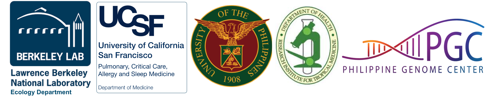

Welcome to Bioinformatics Workshop for M. tuberculosis genomics and phylogenomics at The Philippine Genome Center (July 9-14 2018)¶
This workshop is co-organized by Berkeley Lab Ecology Department, UCSF Division of Pulmonary, Critical Care, Allergy and Sleep Medicine, and The Philippine Genome Center (PGC).
Participants were from National Institutes of Health at theUniversity of the Philippines, Research Institute for Tropical Medicine, and The Philippine Genome Center (PGC).
{kind=link}
Overview¶
This five day bioinformatics workshop is intended to open doors to applying bioinformatics for microbial genomics and phylogenomics, with a specific focus on M. tuberculosis. The overarching goal is to drive engagement with data analysis by increasing the reliability and quality of data interpretation regarding microbial genomics. The workshop is organized as a mixture of lectures and hands-on practicals.
Instructor¶
Dr. Ulas Karaoz (Berkeley Lab)
Keynote¶
Midori Kato-Maeda, MD (UCSF): Genomics to improve the diagnosis of drug resistant tuberculosis
Workshop Agenda¶
Workshop Computer Labs¶
- Day 1: Unix Shell Refresher for Bioinformatics
- Day 2: Microbial Genome Assembly (from short and long reads) and Genome Annotation
- Day 3: Read mapping and variant calling
- Day 4: Phylogenetics/Phylogenomics and Building Reproducible Computational Pipelines
- Day 5: Building Reproducible Computational Pipelines